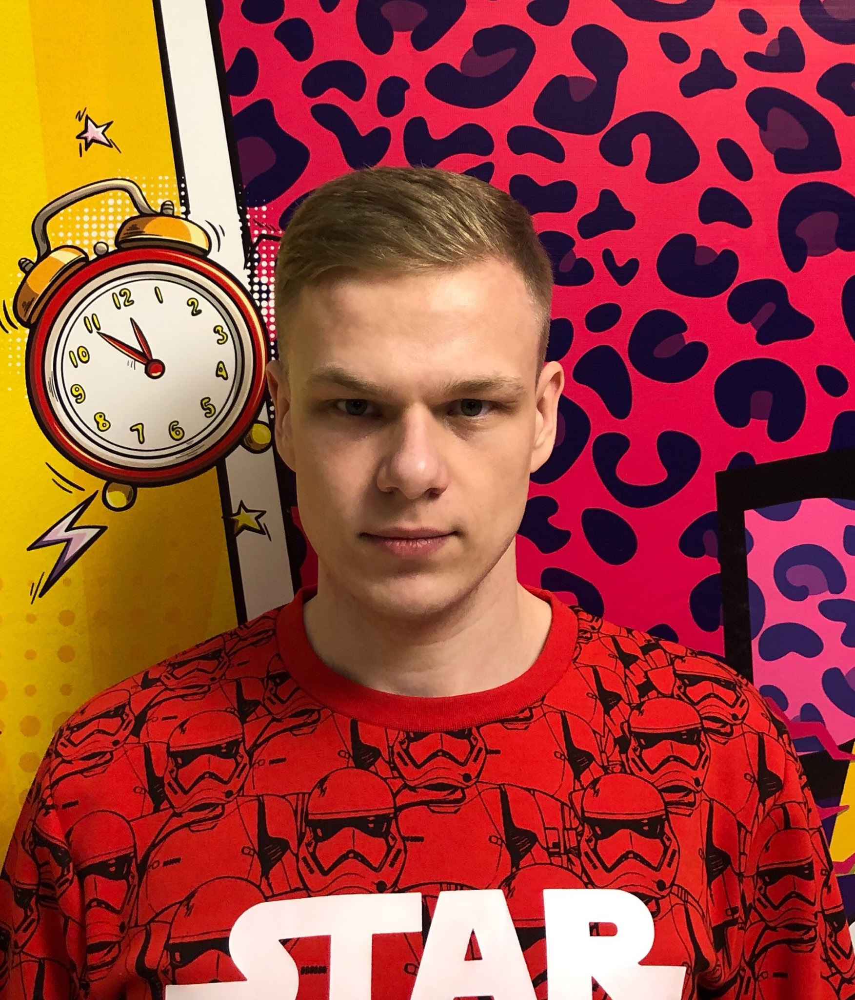

Grishin Dmitry
Nizhny Novgorod, Russian Federation
Date of Birth: September 15, 1996
Phone: 8-910-144-06-65
E-mail: dmitry.geralt@gmail.com
Portfolio
Professional skills
Knowledge JS, React, Redux, CSS, Styled-Components, HTML5, C/C++, Java
Education
2014 - 2018
Lobachevsky State University (Nizhny Novgorod),
Bachelor’s degree in Fundamental Informatics and Information Technologies.
2018 - 2020
Lobachevsky State University (Nizhny Novgorod),
Masters’s degree in Fundamental Informatics and Information Technologies.
Work experience
2019 - 2020
trainee, Joint Stock Company "New Communication Technologies"
About Me
When I was in school, I attended courses at the MISiS branch, which included programming, site building, and computer graphics.
When I was at Lobachevsky State University, I got experience working with projects that are related to html, css, php, js, java, c++, python, I also got knowledge in Agile (Scrum, Kanban).
Area of interest
Front-end development (JS, React, Redux, CSS, HTML).
I try to improve my level of English at my empty time (classes with a tutor).